SIR with sliced¶
Joshua Loyal, January 2018
In [27]:
import numpy as np
np.random.seed(123)
%load_ext autoreload
%autoreload 2
%matplotlib inline
import matplotlib.pyplot as plt
from mpl_toolkits.mplot3d import Axes3D
from loyalpy.plots import abline
import matplotlib as mpl
mpl.rcParams['figure.figsize'] = (10, 10)
The autoreload extension is already loaded. To reload it, use:
%reload_ext autoreload
Problem Statement¶
Consider the model structure:
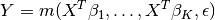
where 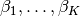 are unknown projection vectors.
 is unknown and assumed to be much less than
is unknown and assumed to be much less than  .
.
 is an unkown function
, and
is an unkown function
, and  is a noise random variable with 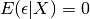.
is a noise random variable with 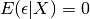.
The model is extremely general. It incompasses many common
models as special cases:
- Linear Model: 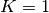, Y = 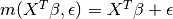
- Generalized Linear Model: , 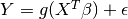
- Heteroscedastic linear model: 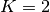, 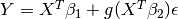
- Neural networks: 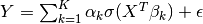
The goal is to determine the projection vectors.
In [ ]:
def make_cubic(n_samples=500, n_features=10, n_informative=2):
"""This dataset can also be generated with sliced.datasets.make_cubic"""
# normally distributed features
X = np.random.randn(n_samples, n_features)
# beta is a linear combination of informative features
beta = np.hstack((
np.ones(n_informative), np.zeros(n_features - n_informative)))
# cubic in subspace
y = 0.125 * np.dot(X, beta) ** 3
# gaussian noise
y += 0.5 * np.random.randn(n_samples)
return X, y
X, y = make_cubic()
In [ ]:
ax = plt.axes(projection='3d')
ax.view_init(5, 30)
ax.scatter(X[:, 0], X[:, 1], y, c=y, cmap='viridis', linewidth=0.5)
In [ ]:
ax = plt.axes(projection='3d')
ax.view_init(5)
ax.scatter(X[:, 0], X[:, 1], y, c=y, cmap='viridis', linewidth=0.5)
In [61]:
from sliced import SlicedInverseRegression
sir = SlicedInverseRegression(n_components=2).fit(X, y)
X_sir = sir.transform(X)
plt.scatter(X_sir[:, 0], y, c=y, cmap='viridis', linewidth=0.5)
Out[61]:
<matplotlib.collections.PathCollection at 0x120409c50>
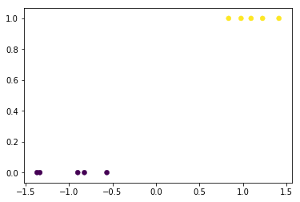
In [73]:
from sliced import SlicedInverseRegression, SlicedAverageVarianceEstimation
from sklearn.discriminant_analysis import LinearDiscriminantAnalysis
from sklearn.datasets import make_blobs
X, y = make_blobs(n_samples=100, centers=[[-1, 0], [1, 0]], center_box=(-5, 5), cluster_std=0.4, random_state=123)
#X = np.array([[-2, -1], [-1, -1], [-1, -2], [1, 1], [1, 2], [2, 1]], dtype='f')
#y = np.array([1, 1, 1, 2, 2, 2])
sir = SlicedInverseRegression(n_components=1, n_slices=2).fit(X, y)
lda = LinearDiscriminantAnalysis(n_components=1, solver='eigen').fit(X, y)
#lda_dir = lda.scalings_ / np.linalg.norm(lda.scalings_)
lda_dir = -lda.scalings_[:, 0] / np.linalg.norm(lda.scalings_[:, 0])
plt.scatter(X[:, 0], X[:, 1], c=y, edgecolors='k')
abline([-1, 0], [1, 0])
plt.arrow(0, 0, sir.components_[0, 0], sir.components_[0, 1], fc='darkorange', ec='darkorange')
plt.arrow(0, 0, lda_dir[0], lda_dir[1], fc='skyblue', ec='skyblue')
plt.xlim(-2, 2)
plt.ylim(-2, 2)
Out[73]:
(-2, 2)
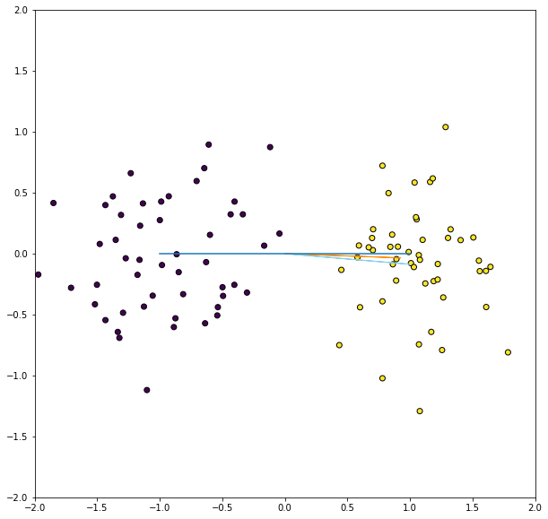
In [66]:
sir.components_
Out[66]:
array([[ 0.92257593, -0.03439985]])
In [67]:
lda.scalings_
Out[67]:
array([[-0.9962563 , -0.02232588],
[ 0.08644875, -0.99975075]])
In [70]:
lda.scalings_[:, 0]
Out[70]:
array([-0.9962563 , 0.08644875])
In [69]:
lda.coef_
Out[69]:
array([[ 1.99637312, -0.1732325 ]])